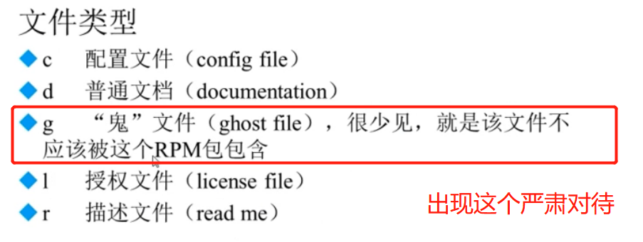
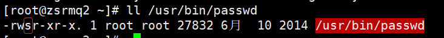
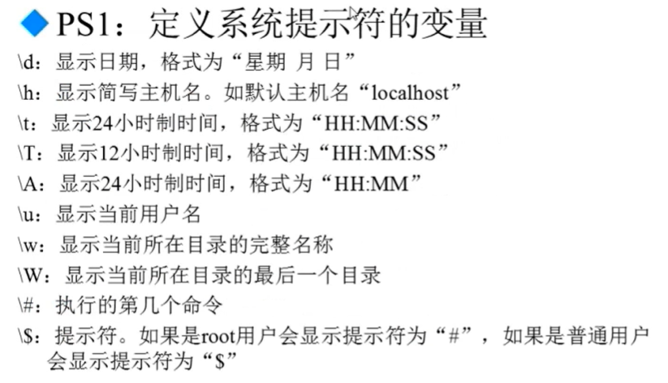
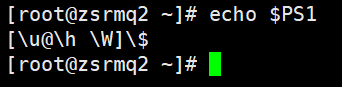
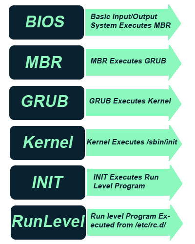
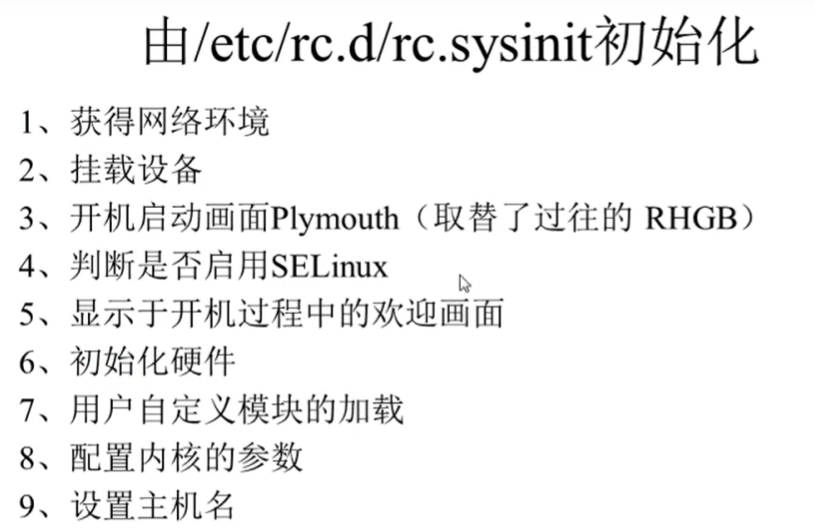
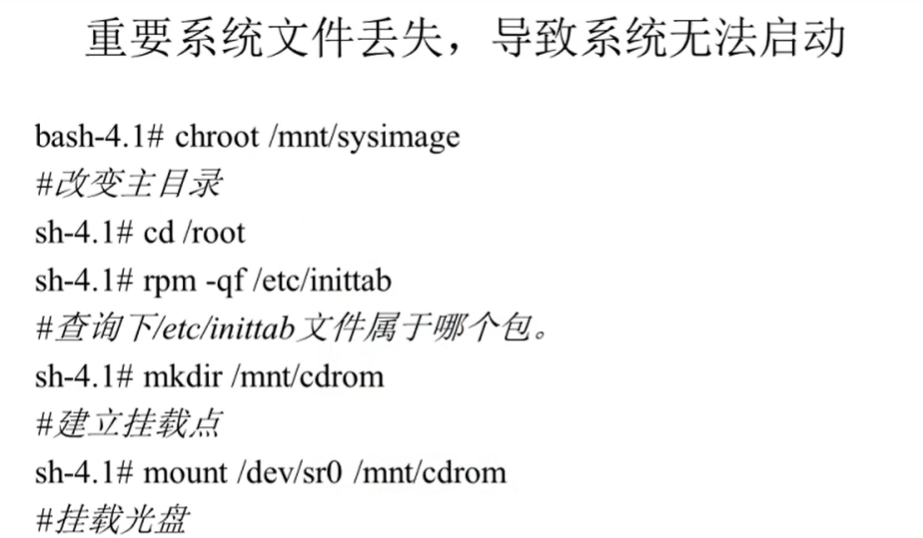
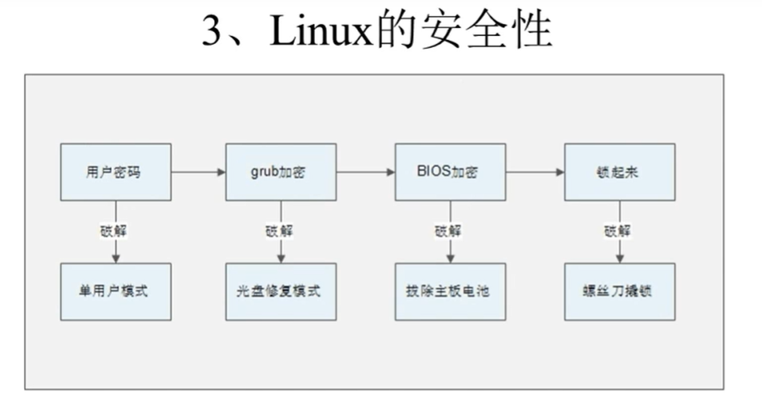

datetime:2022-01-08 14:34:00
author:nzb
Linux
Linux系统简介
UNIX和Linux发展史
1965年，贝尔实验室：MULTICS计划
69年，贝尔实验室的肯汤普森：为了游戏开发UNICS/UNIX系统
62年，美国军方：ARPA：阿帕网，NCP协议——》TCP/IP协议
71年，可汤普森和丹尼斯里奇发明C语言，重写UNIX
UNIX主要发行版本：AIX(IBM)、HP-UX(HP)、Solaris(Sun)、Linux(Intel,AMD……)、BSD
1991年，芬兰大学生Linus Torvalds开发linux内核。大学教授开发minix，但是不接受外来代码，所以李纳斯独自开发，由社区共同维护。
Linux内核版本号：主版本.次版本.末版本 linux内核官网
Linux发行版本：两大派系redhat和debian
开源软件简介
商业软件和开源软件（开源≠免费）
开源软件：apache、NGINX、MySQL、php、mongoDB、python、Ruby、Perl、Go、Rust、Swift、Java
开源软件的特点：使用自由（绝大多数免费）、研究自由（源代码）、散步和改良的自由
支撑互联网的开源技术（LAMP）：Linux，Apache，MySQL，PHP
Linux应用领域
基于Linux的企业服务器
踩点网站：发数据包根据相应嗅探服务器
世界前500服务器
嵌入式应用
手机，平板：Android底层是Linux
智能家电，航空系统，银行系统……
在电影娱乐业
- 特效，图形处理渲染
Linux学习方法
Linux只考虑应用性和稳定性
善于观察提示信息，查找文档，自己解决问题
学习英文：Command not found和No Such file or directory
忘掉Windows的操作习惯
计划，专注，坚持，练习
Linux系统安装
VMware虚拟机安装
VMware官网下载，不推荐安装双系统
特点：
不需要分区就能在物理机上使用两种以上的操作系统
物理机和虚拟机能实现网络通信
可以设定并随时修改虚拟机操作系统的硬件环境
要求：
CPU：主频1GHz以上
内存：1GB以上
硬盘：8GB以上
镜像下载：官网下载: 几个版本：DVD版本，Everything版本，minimal版本，LiveGnome版本，KdeLive版本，livecd版本，NetInstall版本
系统分区
主分区：最多只能有4个
扩展分区：最多只能有一个；主分区加扩展分区最多有4个；不能写入数据，只能包含逻辑分区
逻辑分区：可以和主分区一样正确的写入数据和格式化
注意：兄弟连这套视频录制时间较为久远，当时的硬盘分区形式是MBR的，所以上述的分区限制也只 是针对MBR分区形式，对于GPT分区形式而言，则没有上述限制了。
电脑根据主板的不同（BOIS或者UEFI），会决定硬盘选择MBR分区方案还是GPT分区方案：
BIOS + MBR
UEFI + GPT
两者区别：
也就是说，电脑使用传统BIOS主板，建议使用MBR分区方案；电脑使用UEFI主板，建议使用GPT分区方案
MBR分区表最多只能识别2TB左右的空间，大于2TB的容量将无法识别从而导致硬盘空间浪费；GPT分区表则能够识别2TB以上的硬盘空间。
MBR分区表最多只能支持4个主分区或三个主分区+1个扩展分区(逻辑分区不限制)；GPT分区表在Windows系统下可以支持128个主分区。
在MBR中，分区表的大小是固定的；在GPT分区表头中可自定义分区数量的最大值，也就是说GPT分区表的大小不是固定的。
硬盘分区的作用： 把一块大硬盘分成几块
格式化的作用： 写入文件系统（1.把硬盘分成一个个等大小的数据块 同时2.建立一个inode列表）
Linux中的所有硬件都是文件：
硬盘文件名：
IDE硬盘：/dev/hd[a-d]
SCSI/SATA/USB硬盘：/dev/sd[a-p]
光驱：/dev/cdrom或/dev/sr0
鼠标：/dev/mouse
分区文件名：
/dev/hda[数字]
/dev/sda[数字]
挂载： 给分区分配挂载点
/根分区
swap交换分区（内存两倍，最大不超多2GB）
/boot启动分区（200MB足够）
总结：
分区：把大硬盘分为小的分区
格式化：写入文件系统，同时会清空数据
分区设备文件名：给每个分区定义设备文件名
挂在：给每个分区分配挂载点，这个挂在点必须是空目录
Linux系统安装
把镜像加进去，点击启动，然后用图形界面配置分区和其他的自定义选项，确定定义root用户的密码和普通用户的账号和密码。然后等待安装完成即可。
远程登陆管理工具
三种网络连接方式：
桥接模式：虚拟机使用物理网卡
NAT模式：虚拟机使用vmnet8虚拟网卡
Host-only模式：虚拟机使用vmnet1虚拟网卡，并且只能和本机通信
临时配置ip：ifconfig ens33 192.168.XXX.XXX
永久配置ip：
- 查看网络接口：ifconfig
- 去网络接口的配置文件进行修改
[root@bogon ~]# vim /etc/sysconfig/network-scripts/ifcfg-ens33/ ens33是网卡接口 - 配置文件
TYPE=“Ethernet” PROXY_METHOD=“none” BROWSER_ONLY=“no” BOOTPROTO=“none” //dhcp是自动获取 DEFROUTE=“yes” IPV4_FAILURE_FATAL=“no” IPV6INIT=“yes” IPV6_AUTOCONF=“yes” IPV6_DEFROUTE=“yes” IPV6_FAILURE_FATAL=“no” IPV6_ADDR_GEN_MODE=“stable-privacy” NAME=“ens33” UUID=“d8ee940a-1a27-4417-9ae8-88a5364ee4d1” DEVICE=“ens33” ONBOOT=“yes” //引导激活 IPADDR=172.16.10.188 //ip地址 NETMASK=255.255.255.0 //子网掩码 GATEWAY=172.16.10.254 //网关 DNS1=222.88.88.88 //DNS
Linux使用注意事项（新手必看）
Linux 严格区分大小写
和 Windows 不同，Linux 是严格区分大小写的，包括文件名和目录名、命令、命令选项、配置文件设置选项等。
例如，Windows 系统桌面上有一个名为 Demo 的文件夹，当我们在桌面上再新建一个名为 demo 的文件夹时，系统会提示文件夹命名冲突；而 Linux 系统不会，Linux 系统认为 Demo 文件和 demo 文件不是同一个文件，因此在 Linux 系统中，Demo 文件和 demo 文件可以位于同一目录下。
因此，初学者在操作 Linux 系统时要注意区分大小写的不同。
Linux 中所有内容（包括硬件设备）以文件形式保存
Linux 中所有内容都是以文件的形式保存和管理的（硬件设备也是文件），这和 Windows 完全不同，Windows 是通过设备管理器来管理硬件的。比如说，Linux 的设备文件保存在 /dev/ 目录中，硬盘文件是 /dev/sd[a-p]，光盘文件是 /dev/hdc 等。
Linux 不靠扩展名区分文件类型
我们都知道，Windows 是依赖扩展名区分文件类型的，比如，".txt" 是文本文件、".exe" 是执行文件、".ini" 是配置文件、".mp4" 是小电影等。但 Linux 不是。
Linux 系统通过权限位标识来确定文件类型，且文件类型的种类也不像 Windows 下那么多，常见的文件类型只有普通文件、目录、链接文件、块设备文件、字符设备文件等几种。Linux 的可执行文件不过就是普通文件被赋予了可执行权限而已。
Linux 中的一些特殊文件还是要求写 "扩展名" 的，但大家小心，并不是 Linux 一定要靠扩展名来识别文件类型，写这些扩展名是为了帮助管理员来区分不同的文件类型。这样的文件扩展名主要有以下几种：
压缩包：Linux 下常见的压缩文件名有 .gz、.bz2、.zip、.tar.gz、.tar.bz2、.tgz 等。为什么压缩包一定要写扩展名呢？很简单，如果不写清楚扩展名，那么管理员不容易判断压缩包的格式，虽然有命令可以帮助判断，但是直观一点更加方便。另外，就算没写扩展名，在 Linux 中一样可以解压缩，不影响使用。
二进制软件包：CentOS 中所使用的二进制安装包是 RPM 包，所有的 RPM 包都用".rpm"扩展名结尾，目的同样是让管理员一目了然。
程序文件：Shell 脚本一般用 ".sh" 扩展名结尾，其他还有用 ".c" 扩展名结尾的 C 语言文件等。
网页文件：网页文件一般使用 "*.php" 等结尾，不过这是网页服务器的要求，而不是 Linux 的要求。
在此不一一列举了，还有如日常使用较多的图片文件、视频文件、Office 文件等，也是如此。
Linux中所有存储设备都必须在挂载之后才能使用
Linux 中所有的存储设备都有自己的设备文件名，这些设备文件必须在挂载之后才能使用，包括硬盘、U 盘和光盘。
挂载其实就是给这些存储设备分配盘符，只不过 Windows 中的盘符用英文字母表示，而 Linux 中的盘符则是一个已经建立的空目录。我们把这些空目录叫作挂载点（可以理解为 Windows 的盘符），把设备文件（如 /dev/sdb）和挂载点（已经建立的空目录）连接的过程叫作挂载。这个过程是通过挂载命令实现的，具体的挂载命令后续会讲。
Windows 下的程序不能直接在 Linux 中使用
Linux 和 Windows 是不同的操作系统，两者的安装软件不能混用。例如，Windows 系统上的 QQ 软件安装包无法直接放到 Linux 上使用。
系统之间存在的这一差异，有弊也有利。弊端很明显，就是所有的软件要想安装在 Linux 系统上，必须单独开发针对 Linux 系统的版本（也可以依赖模拟器软件运行）；好处则是能感染 Windows 系统的病毒（或木马）对 Linux 无效。
Linux各目录的作用
/bin/：存放系统命令/sbin/：存放系统目录，只有超级用户能用/usr/bin/：存放系统命令，单用户模式不能执行/usr/sbin/：存放系统命令，只有超级用户能用，单用户模式不能执行/boot/：系统启动目录，内核和启动引导程序/dev/：硬件设备文件目录/etc/：linux默认的配置文件保存目录/home/：普通用户家目录/root/：超级用户家目录/lib/：系统调用的函数库/lost+found/：当系统意外崩溃时，每个分区都含有的存放的文件碎片用来修复/media/：挂载目录，挂载媒体设备/mnt/：挂载目录，挂载U盘，移动硬盘，和其他操作系统的分区/misc/：挂载目录，挂载NFS服务的共享目录/opt/：第三方安装的软件的保存目录，也可以放到 /usr/local/ 下/proc/：存放在内存里面，存放系统的内核，进程，外部设备/sys/：存放在内存里面，存放系统的内核相关的东西/srv/：服务数据目录/tmp/：临时目录，可以清空/usr/：系统资源目录/var/：动态资源保存目录，日志，邮件，数据库
服务器注意事项
远程服务器不允许关机，只能重启
重启时应该关闭服务
不要在服务器访问高峰运行高负载命令
远程配置防火墙（过滤不是防病毒，比如允许某个端口运行访问）时不要把自己踢出服务器
指定合理的密码规范和定期更新
合理分配权限
定期备份重要数据和日志（系统备份：etc、boot、usr等目录）
Linux常用命令
文件处理命令
ls（list）
ls [参数] [路径]ls -l：查看文件所有属性
ls -d：查看目录本身（而不是查看目录下的信息）
ls -i：查看文件的inode号
ls -h：人性化显示（文件大小以K, M显示）
ls -s：显示文件占用的块的数量
ls -a：查看隐藏文件
mkdir（make directories）
创建目录：mkdir [参数] [目录]- mkdir -p：递归创建目录
cd（change directories）
切换目录：cd [路径]pwd（print work directories）
查看完整工作路径rmdir （remove empty directories）
删除空目录：rmdir [目录名]cp（copy）
复制文件或目录：cp -rp [原文件或目录] [目标目录]cp -r：复制目录
cp -p：原文件和新文件属性完全一致
注：复制的同时可以改名
mv（move）
剪切文件、改名：mv [原文件或目录] [目标目录]- 注：移动的同时可以改名
rm（remove）
删除文件或目录：rm -rf [文件或目录]rm -r：文件夹递归删除（删除目录）
rm -f：强制删除，不询问
注：
删除之前做好备份
误删除之后对硬盘少做读写操作
touch
创建空文件：touch [文件名]cat
显示文件内容：cat [文件名]- cat -n：显示行号
tac
显示文件内容（反向查看）：tac[文件名]more
分页显示文件：空格翻页，回车换行，q退出 查看命令帮助信息时就是使用more来查看less
分页显示文件（可向上翻页）：空格翻页，回车换行，q退出，还可以pageup回翻页，上箭头网上翻一行，还可以搜索：/关 键词，再按n搜索下一个匹配的head
显示文件前面几行：head [参数] [文件名]- head -m：指定看前几行，默认前10行
tail
显示文件后面几行：tail [参数] [文件名]tail -n：指定看后几行，默认后10行
tail -f：动态看文件动态变化
ln（link）
生成链接文件：ln [原文件] [目标文件]ln -s：生成软链接
软连接特征：类似Windows快捷方式
lrwxrwxrwx：软连接的权限不起作用，还是要看源文件权限
文件大小：很小，只是符号链接
箭头指向源文件
什么时候需要用到软连接？Windows时你什么时候需要用到快捷方式时就用
ln：生成硬链接
硬链接特征
拷贝cp -p + 同步更新：cp -p的区别是硬链接文件和原文件可以同步更新
硬链接通过inode号来区分
不能跨分区
不能针对目录
硬链接和软连接的区别
1.硬链接不能跨分区
2.硬链接不能针对目录

权限管理命令
chmod（change the permissions mode of a life）
改变文件或目录权限：chmod [参数] [文件或目录]chmod [u/g/o/a] [+/-/=] [r/w/x]
u：所有者；g：所属组；a：所有人；举例：chmod u+w；chmod u+x, o-wrchmod 三位数XXX：r—4，w—2，x—1：举例：rwxr-xr-x：755 （最常用）
chmod -R：递归修改目录及目录下的权限
注释：深入理解文件的wrx和目录的wrx的意义
删除一个文件的权限不是对这个文件有写权限，而是对这个文件的目录有写权限 一个目录往往都是同时有r和x权限，可进入目录和查看目录下的文件
chown（change file ownership）
改变文件或目录所有者：chown [用户名] [文件或目录]：只有管理员root能执行 例：chown root:testgroup /test/chgrp（change file group ownership）
改变文件或目录所属组：chgrp [组名] [文件或目录]：只有管理员root能执行注：每个文件都只有一个user和一个group，某些others拥有拥有共同的权限，这些others在一个组里，也就是group所属组。所属者user可以不在所属组group里面，并且一个用户可以在不同的组里。 相关的命令是：
groupadd YYY //创建组
useradd -g YYY XXX //创建用户并将YYY设置为其主要组
usermod -g ZZZ XXX //修改用户XXX的主要组为ZZZ
umask（the user file-creation mask）
显示、设置文件的缺省权限umask -S：人性化显示默认权限，以rwx形式显示新建文件缺省权限
umask：显示掩码（非人性化）
比如：0022，权限 实际上为：777 - 022 = 755
注：Linux中，默认创建的文件是没有可执行权限的（touch 创建的文件），所以文件是666，目录是777
umask 三位数：修改掩码，使默认权限变化
umask 023；中文修改户的掩码为0023，权限为：754，并不建议修改
文件搜索命令
尽量少搜索，特别是在高峰期时
find
文件精准搜索：find [搜索范围] [匹配条件]find [搜索范围] -name：根据文件名搜索
find [搜索范围] -iname：根据文件名搜索，不区分大小写
注：通配符：
*，？，[]*：匹配多个字符；举例：find /ete -name init（模糊搜索，包含即可）？：匹配单个字符；举例：find /ete -name init???（搜索以init开头后面还有3个字符的文件）
find [搜索范围] -size [+/-]n：
+n：大于；
-n：小于，只有数据块（0.5KB）个数；
n：等于
find [搜索范围] -user：根据所有者查找
find [搜索范围] -group：根据所属组查找
find [搜索范围] -amin [-/+]分钟数：查找指定时间内或者超过该时间被修改过访问时间的文件(
access)find [搜索范围] -cmin [-/+]分钟数：查找指定时间内或者超过该时间被修改过文件属性的文件(
change)find [搜索范围] -mmin [-/+]分钟数：查找指定时间内或者超过该时间被修改过文件内容的文件(
modify)还可以在两个查找条件之间加上
-a ：一个是同时满足(
and)-o ：一个是满足任意一个即可(
or)或者-exec/-ok 命令 [空格] {} [空格] \； 对搜索结果执行操作
- 示例：find ./ -name test.txt -exec ls -l {} \;
- -ok：是对后面的命令逐个询问
find [搜索范围] -type：根据文件类型查找
find [搜索范围] -inum：根据inode号查找
locate
模糊查找：locate 文件名系统里所有的文件都会定期收录到/var/lib/mlocate.db这个文件库里，locate就是在这个里去找，但是新的文件没别收录进去，所以就找不到，需要手动更新文件资料库updatedb （但是tmp目录下不收录进去）
locate -i：不区分大小写
which
查找命令的地址和别名alias：which 命令名whereis
查找命令地址和其帮助文档的位置：whereis 命令名grep
在文件里面查找字串匹配的行并输出：grep [-iv] [指定字串] [文件]grep -i：不区分大小写，查找指定字串所在的行
grep -v：排除指定字串所在的行
指定字串前面加个 ^ 表示以什么字串开头
帮助命令
man （manual）或 info （information）
查看命令和配置文件的帮助信息，浏览和more操作一样：man 命令名/配置文件名帮助类型里1是命令的帮助，5是配置文件的帮助
For Example：man 1 passwd，man 5 passwd
whatis
更加简单的命令查询，查看命令作用apropos
更加简单的配置文件查询–-help
得到信息更加简单：命令 ––helphelp
获得shell的内置命令的帮助，比如：cd，pwd，umask，if等
用户管理命令
useradd和passwd
新建用户和修改密码who和w
查看当前登录用户名：tty是本地登录，pts表示远程登录 who简单信息 w其中第一行：当前时间，已经运行的时间（服务器），多少个用户登录，服务器负载均衡（CPU，内存等负载情况）这行类型也可以 通过uptime获得
IDLE：表示用户空闲时间（多久没操作了）
JCPU：累计占用的CPU时间
PCPU ：当前用户登录后占用CPU的时间
WHAT：当前执行的操作
压缩解压命令
几种压缩格式
.gz
.zip
.bz2
gzip（GNU zip）和 gunzip/gzip -d （GNU unzip）
压缩/解压文件：gzip/gunzip [文件]解压缩：gunzip[文件] 或 gzip -d [文件]
只能压缩文件，不能压缩目录，并且不保留原文件
压缩文件后缀：.gz
tar
打包目录：tar [选项] [压缩后文件名] [目录（可以多个空格隔开）]tar -c：打包
tar -x：解包
tar -v：显示详细信息
tar -f：指定文件名
tar -z：打包的同时压缩，或者解包的时候解压缩,适用于压缩解压gz
tar -j：同-z，适用于压缩解压bz2
举例：tar -cvf XXX.tar YYY gzip XXX.tar ，最后生成XXX.tar.gz 。或者直接tar -zcvf打包压缩一部合成，反向是tar -zxvf
压缩文件后缀：.tar.gz
zip和unzip
压缩文件或目录：zip [选项] [压缩后文件名] [文件或目录]，压缩比不高压缩后能保留原文件
zip -r：压缩目录
压缩文件后缀：.zip
bzip2和bunzip2
bzip2 /bunzip2 [选项] [文件]bzip2 -k：压缩的同时保留原文件
bunzip -k：解压的同时保留原文件
gzip的升级版本，压缩比较好
用tar生成.tar.bz2文件：tar -cjf xxx.tar.bz2 xxx
压缩文件后缀：.bz2
网络命令
write
给在线用户发信息，以ctrl+D保存结束：write <用户名>wall （write all）
给当前在线的所有用户发送信息：wall [信息内容]ping
测试网络连通性：ping 选项 [IP地址]网络踩点，Linux会一直ping下去
ping -c 次数：定义ping的次数
ifconfig （interface configure）
查看当前系统网卡信息和设置网卡信息（临时的）：ifconfig 网卡名称 IP地址mail
查看和发送邮件：mail [用户名]不一定要在线
mail 用户名：发送
mail：查看的子命令：
q：退出
help(帮助)，
数字(查看指定邮件)，
列表：h(列表)，
删除：d 数字(删)
last
日志查询命令，统计系统的所有登录信息：lastlog
查看用户最后登录的信息- lastlog -u uid：查看指定用户上次登录的信息
traceroute
跟踪节点的路径：traceroute ip地址netstat
显示网络相关信息：netstat [选项]netstat -t：TCP协议（有3次握手）
netstat -u：UDP协议（无3次握手，快，但是不保证数据收到）
netstat -l：监听
netstat -r：路由
netstat -n：显示ip地址和端口号
最常用的三种组合命令：
netstat -tlun：查看本机监听的端口
1：标志协议：TCP/UDP
2：数据包接收队列：0代表网络通畅，表示收到的数据已经在本地接收缓冲，但是还有多少没有被进程取走，
recv()如果接收队列Recv-Q一直处于阻塞状态，可能是遭受了拒绝服务denial-of-service攻击。3：数据包发送队列：0代表网络通畅，对方没有收到的数据或者说没有
Ack的,还是本地缓冲区. 如果发送队列Send-Q不能很快的清零，可能是有应用向外发送数据包过快，或者是对方接收数据包不够快。4：本机IP地址和端口（主要查看的内容）
5：监测状态：TCP才有，UDP没有（你可以直接发送，不管在不在线，不需要监听）
netstat -an：查看本机所有的网络连接

- 跟-tlun的区别是可以查看正在连接的服务
netstat -rn：查看本机路由表
setup
redhat系linux独有配置网络的工具：永久生效
配置玩需要重启网络服务：service network restart
挂载命令
mount
mount [-t 文件系统] 设备文件名 挂载点举例：mount -t iso9660 /dev/sr0 /mnt/cdrom
- /dev/sr0：设备文件名，系统默认的
umount
卸载：umount 设备文件名
关机重启命令
shutdown
shutdown [选项] 时间shutdown -h 时间（new）：关机
shutdown -r 时间：重启
shutdown -c：取消前一个关机命令
谨慎操作
其他关机命令：
halt,poweroff,init 0其他重启命令：
reboot,init 6init
系统运行级别：
- 0：关机，
- 1：单用户，
- 2：不含NFS服务的多用户，
- 3：完全多用户，
- 4：未分配，
- 5：图形界面，
- 6：重启
/etc/inittab配置文件里面有运行级别的信息，方便查询，也可以改运行级别init 数字：设置系统运行级别，临时更改
runlevel：查询系统运行级别
logout和exit
- 都是退出登录：logout退出是把因为你注销了登陆机而把你踢出的退出，exit是你直接退出连接的机器。
强大的文本编辑器:Vim
概述
Vim是linux中的一款使用最广的文本编辑器，全屏幕编辑器。
可以建立，编辑，显示文本文件。
它没有菜单只有命令.
三种模式
命令模式：输的东西都会当做命令处理
插入模式
后：a/A（行末）
前：i/I（行首）
行：o（光标下）/O（光标上）进入
退出模式：ESC键
常用操作
:set ic————搜索时不区分大小写
行号相关：
:set nu————显示行号
:set nonu————关闭行号
定位相关
gg————快速定位到第一行
G————快速定位到最后一行
nG————快速定位到第n行
:n————快速定位到第n行
$————快速定位到行尾
0————快速定位到行首
删除相关
x————删除光标后字符
X————删除光标前字符
nx————删除光标后n个字符
dd————删除一行
dd————删除当前行，ndd删除当前行和下面的n-1行
dG————删除当前行到文件末尾
D————删除光标到行尾
:2,8d————删除第2行到第8行
复制粘贴替换相关
yy————复制当前行
nyy————复制当前行和下面的n-1行
p————粘贴到光标上一行
P————粘贴到光标下一行
dd/ndd 和 p/P ————剪切（删除和粘贴组合）
r————替换当前字符
R————从当前位置一直往后替换（进入替换模式，esc退出模式）
u————恢复
ctrl+r————撤销恢复
/string————搜索命令，按n找下一个
:%s/old/new/g————全文替换old为new
:n1,n2s/old/new/g————n1到n2行替换old为new
退出保存相关
:w————保存（相当于Windows的ctrl+r）
:w filename————另存为
:wq————保存并退出
ZZ————保存并退出
:q!————不保存退出
:wq!————强制保存退出，针对只读文件可以强行保存(只有文件所有者和root才可以)
使用技巧
- 查看命令的执行结果：
:!命令
- 查看命令的地址：
:!which 命令名
导入内容到文件中
导入文件内容：
:r 导入文件地址(路径)导入命令执行结果：
:r !命令导入命令的地址：
:r !which 命令导入当前时间：
:r !date
定义快捷键
:map 快捷键（Ctrl + v + 自己想要的数字或字母） 触发命令关键词自动替换
:ab mymail XXXXXXX@gmail.com 输入mymail是自动替换为你的邮箱地址多行注释与取消注释
方法一
注释：Ctrl + v 行首选择多行，I（大写的i，shift + i），插入# ，ESC退出命令模式
取消注释：Ctrl + v 行首选择多行，d
方法二
:n,n+10s/^/#/g：注释n行到n+10行
:n,n+10s/^#//g：取消注释（注意行首尖叫号 ^）
所有配置都是临时的，要永久需要写入配置文件里，存放在用户的家目录下，.vimrc，如果没有的话就自己新建一个也ok
Linux软件包管理
软件包管理简介
软件包分类：
源码包：包括脚本安装包
二进制包：RPM包，系统默认包（ubuntu中是deb包），源码包编译后的包
源码包的优点
开源
可以自由选择所需的功能
软件是便宜安装，所以更加是个自己的系统，更加稳定也效率更高
卸载方便（直接把目录删除）
源码包的缺点
安装步骤多
编译并安装时间过长
因为是编译安装，安装过程中一旦报错新手很难解决
RPM包优点
包管理系统简单，只需要几个命令就可以实现软件包的安装，升级，查询和卸载
安装速度比源码包快很多
RPM包缺点
不能看见原代码
功能选择不如源码包灵活
依赖性
RPM包管理
rpm命令管理
- RPM包名和包全名
RPM包的依赖性：树形依赖，环形依赖，模块依赖(以.iso.数组结束的就是模块依赖，也叫库文件依赖模块依赖查询网站)
安装和升级使用包全名，卸载和查询使用包名（在/var/lib/rpm/中的数据库总搜索）
RPM安装：rpm -ivh 包全名
-i（install）：安装
-v（verbose）：显示详细信息
-h（hash）：显示进度
--nodeps：不检测依赖性（该选项不用）
RPM升级：rpm -Uvh 包全名
- -U（upgrade）：升级
RPM卸载：rpm -e 包名,也要考虑依赖性，当有包被依赖时，此时这个包不能删掉
- -e（erase）：卸载
RPM查询包：
查询包还是用RPM，yum没有查询功能查询包是否安装：rpm -q 包名
-q（query）查询所有安装的包：rpm -qa
-a（all）RPM查询包详细信息：rpm -qi 包名
-i（information）RPM查询未安装包的详细信息：rpm -qip 包全名
-p（package）RPM查询文件安装位置：rpm -ql 包名
-l（list）RPM查询未安装包的文件安装的默认位置：rpm -qlp 包名
RPM查询系统文件属于哪个rpm包：rpm -qf 系统文件名
-f（file）RPM查询软件包的依赖性：rpm -qR 包名
-R（requires）RPM查询未安装软件包的依赖性：rpm -qRp 包全名
RPM包校验：rpm -V 包名
-V（verify）

RPM包中文件提取（用来修复系统）：
rpm2cpio 包全名 | cpio -idv . 包中的文件绝对路径
-i（copy-in模式）：还原
-d：还原时自动新建目录
-v：显示还原过程
yum在线管理
既可以用在线yum源文件服务器，也可以用本地光盘作为yum源文件服务器。
会自动解决依赖性问题
更换yum源：保存在/etc/yum.repos.d/目录下
查询：yum list
搜索：yum search 包名
安装：yum -y install 包名
-y（yes）升级：yum -y update 包名
yum -y update：不写包名，直接升级全部（包括Linux内核，远程升级了的话不能开机，需要本地配置文件），慎用卸载，会卸载所有依赖的包：yum -y remove 包名
Linux服务器应该采用最小化安装的原则，用什么装什么
装完了最好不要用yum卸载，也不要随便升级
yum的软件组管理：
查询所有可用的软件组列表：yum grouplist
安装指定软件组：yum groupinstall 软件包组名
卸载指定软件组：yum groupremove 软件包组名
用光盘做yum源：修改/etc/yum.repos.d/下的media配置文件，该源为关盘挂载点，注意：配置文件的格式要求很严格，注释应该顶头写。
源码包管理
区别：
安装前的区别：概念上的区别，见上述
安装后的区别：安装位置的区别
RPM包（一个软件）的默认安装位置：
/etc/：配置文件
/usr/bin/：可执行的命令
/usr/lib/：程序所使用的函数库
/usr/share/doc/：基本的软件使用手册
/usr/share/man/：版主文档
/var/www/html/：服务器类软件的默认网页位置
源码包的安装位置：
- 需要手动指定安装目录：一般推荐/usr/local/软件名/
RPM包和源码包安装软件带来的影响：启动服务的方式不同
RPM包在/etc/rc.d/init.d/下有执行文件，采用两种方式启动：
/etc/rc.d/init.d/httpd start
service httpd start
源码包的服务启动方式不能用系统服务管理命令例如service来管理
- 只能在/usr/local/软件名/bin/执行软件码 start 目录下启动服务
Apache源码包的具体安装步骤：
安装C语言编译器：gcc
下载apache的源码包：path
确认源码保存位置/usr/local/src/
确认软件安装位置：/usr/local/
如何确认安装过程报错
安装过程停止并出现error，warning，no等提示语言解压缩下载的源码包：tar -zxvf 源码包名
进入解压缩目录：INSTALL和README时安装说明和使用说明
执行./configure --prefix=默认安装目录：编译前准备
定义需要的功能选项
检测系统环境是否符合安装要求
把定义好的的功能选项和检测系统环境的信息都写入Makefile文件（./configure过程会生成），用于后续的编译
执行make：编译
如果前两步报错，执行make clean，清空过程中生成的临时文件。
执行make install：安装
删除源码包安装的软件：直接rm -rf /usr/local/软件名/
脚本安装包与软件包管理
脚本安装包不是独立的软件包类型，常见安装的是源码包
人为包安装过程写成额自动安装的脚本，只要执行脚本，定义简单的参数，就可以完成安装
非常类似于windows下软件的安装方式
Webmin是一个基于Web的Linux系统管理界面，可以通过图形化的方式设置用户账号、Apache、DNS、文件共享等服务。下载软件，下载后解压缩，并进入解压缩目录，执行.sh安装脚本,最后登录ip地址的自己配置的端口号进入该网站即可
如何选择包安装？
如果对外服务，选择源码包安装，例如：Apache
如果本机使用，RPM包安装，例如：gcc编译器
Linux中的用户管理
用户配置文件
越是安全性要求高的服务器越需要对用户权限等级制度和服务器操作规范有很高的要求，linux中主要通过用户配置文件来查看和修改用户信息
主要有四个配置文件：/etc/passwd，/etc/shadow，/etc/group，/etc/gshadow
/etc/passwd：用户信息文件格式（7个字段）
用户名称；
密码标志；
UID：
用户ID0：超级用户
1—499：系统用户:不能登录，不能删除
500—65535：普通用户
GID：
组ID：这里是初始组ID不是附加组ID用户说明：
备注家目录；
普通用户：/home/用户名/
超级用户：/root/
Shell
命令解释器类型，默认是bash
/etc/shadow：影子文件是passwd的影子，默认权限：000格式（9个字段）
用户名称；
加密密码；
SHA512加密，可以暴力破解
如果密码是：“!!”和 “*”，表示没有密码，不能登录
密码最后一此修改时间；
时间戳表示：使用1970年1月一日作为标准时间，每过一天时间戳加1两次密码修改间隔（天）；
密码时效天数（-1永不失效）；
密码修改到期前的警告天数；
密码到期后的宽限天数；
账号失效时间；
时间戳表示保留字段
时间戳换算：
时间戳—>日期：date -d "1970-01-01 16066 days"
日期—>时间戳：echo$(($(date --date="2014/01/06" +%s)/86400+1))
/etc/group&/etc/gshadow：组信息文件&组密码文件/etc/group格式（4个字段）组名，
组密码标志，
GID，
组中附加用户
/etc/gshadow格式（4个字段）组名，
组密码(默认没有，也不推荐使用)，
组管理员用户名，
组中附加用户
Linux中查看用户的初始组的方法：查询etc/passwd和/etc/group，两两对照查看
用户管理相关文件
用户的家目录：（会自动生成）
普通用户：/home/用户名/：权限700
超级用户：/root/：权限550
用户的邮箱：
- /var/spool/mail/用户名/
用户模板目录：就是母板，新建用户会默认创建在用户家目录下
把/etc/skel/目录下的文件复制到用户家目录下- /etc/skel/
用户管理命令
useradd
创建用户：useradd [选项] 用户名新建一个用户实际上就是在上述六个地方生成了默认信息，所以手工修改上述六个地方就可以手工添加用户
useradd -u UID：指定自定义UID
useradd -d 家目录：指定自定义家目录
useradd -c 用户说明：指定自定义用户说明
useradd -g 组名：指定自定义初始组组名
不建议修改useradd -G 组名1,组名2：指定自定义附加组组名
useradd -s shell：指定自定义登录shell，默认是/bin/bash
用户默认值配置文件：/etc/default/useradd 和 /etc/login.defs

passwd
修改用户密码：passwd [选项] 用户名超级用户可以改任意用户密码
普通用户只能给自己设密码
passwdwhoami：查看当前用户
passwd -S 用户名 ：查看密码状态，就是shadow里面的信息，仅root用户可用
passwd -l 用户名 ：锁定用户，实际是在shadow中的密码前面加了“!”，仅root用户可用
passwd -u 用户名 ：解锁用户
passwd --stdin 用户名 ：使用字符串作为用户密码
- 例如：echo "123" | passwd --stdin 用户名，shell编程添加多个用户时使用
usermod
修改用户信息：usermod [选项] 用户名usermod -u UID：修改UID
usermod -c 用户说明：修改用户说明
usermod -G 组名1,组名2：修改附加组
usermod -g 组名：修改初始组（不推荐）
usermod -L：锁定用户（Lock）
usermod -U：解锁用户（Unlock）
chage
修改用户密码状态：chage [选项] 用户名chage -l：查询密码详细状态
chage -d 日期：修改密码最后一次更改日期
chage -m 天数：修改两次密码修改间隔
chage -M 天数：修改密码有效期
chage -W 天数：修改密码过期前警告天数
chage -I 天数：修改宽限天数
chage -E 日期：修改账号失效时间
注意：实际是对shadow文件里面的信息进行修改，chage -d 0 用户名 使用最多，把用户的修改密码时间归零，强制用户第一次登陆系统必须修改密码
userdel
删除用户：userdel [选项] 用户名userdel -r 用户名：删除用户的同时删掉家目录
不推荐手工创建用户，但是可以手工删除用户的相关信息：
etc/passwd
etc/shadow
etc/group
etc/gshadow
var/spool/mail/用户名
/home/用户名/
手工把上面6个位置和要删除的用户的相关信息删除就可以了
id
查询用户uid，gid和附加组：id 用户名su
用户切换：su [选项] 用户名su - 用户名 ：连带用户的环境变量一起切换，中间减号绝对不能省去，省去就不会切换环境变量
su - root -c 命令名：不切换root，只是执行root权限才能执行的命令
用户组管理命令
groupadd
添加用户组：groupadd [选项] 组名- groupadd -g（GID）组名：指定组ID
groupmod
groupmod -g 新组id 旧组id
groupmod -n 新组名 旧组名
尽量不修改
groupdel
- groupdel 组名：要想删除一个组，这个组中不允许有初始用户存在
gpasswd
把用户添入组或者从组中删除：gpasswd [选项] 组名gpasswd -a 用户名：把用户加入组
gpasswd -a 用户名 组名gpasswd -d 用户名：把用户从组中删除
gpasswd -d 用户名 组名注：也可以直接在/etc/group文件里添加附加组(不推荐改初始组)
总结：
- Linux中用户和用户组的关系是：

Linux权限管理
ACL权限
ACL权限的简介和开启方式

任何一个文件在一个时刻只能有一个所有者和所属组
ACL权限用来解决文件的权限身份不够用的情况
ACL权限需要分区支持：
dumpe2fs -h /dev/sda5/ 查看是否支持acl选项，如果不支持。
/dev/sda5/ 为df -h 查看根分区对应的文件系统可以临时开启：mount -o remount,acl /
重新挂载根分区，并挂载加入acl权限或者永久开启：vim /etc/fstab，然后重启系统
在根分区的defaults后面加个：,act 慎用：任何错误都会导致挂载失败
ACL权限类似于windows的权限设置方法，就是不考虑user，group和others的权限设置，单独添加一个用户或者一个用户组对一个文件或者目录的权限
查看与设定ACL权限
getfacl
查看ACL的权限：getfacle 文件名setfacl
设置ACL的权限：setfacl [选项 ] 文件名setfacl -m u/g/m：用户名/组名/不写权限 文件名：设定文件的ACL权限
setfacl -m u:用户名:权限 文件名：设定文件用户的ACL权限
为用户分配ACL权限，使用“u:用户名:权限”格式 例：setfacl -m u:user1:rwx /test/setfacl -m g:组名:不写权限 文件名：设定文件用户组的ACL权限
为组分配ACL权限，使用“g:组名:权限”格式
setfacl -x ：删除指定的ACL权限
setfacl -b ：删除所有的ACL权限
setfacl -d ：设定默认ACL权限
setfacl -k ：删除默认ACL权限
setfacl -R ：递归设定ACL权限
最大有效权限与删除ACL权限
最大有效权限mask：可以通过getfacl 文件名来查看ACL的权限，里面有mask，可以通过控制mask的值来修改默认最大有效权限。
需要注意的是mask权限不会影响当前文件所有者，只会影响ACL权限和所属组的权限
setfacl -x u/g:用户名/组名 文件名：删除文件指定的ACL权限
setfacl -b 文件名：删除文件所有ACL权限
默认ACL和递归ACL权限（只能针对目录）
setfacl -m d:u/g: 用户名/组名:权限 文件名：设定父目录的默认ACL权限，父目录里所有的新建文件都会继承父目录的ACL权限
d参数就是设置默认的ACL权限setfacl -k：删除父目录的默认ACL权限
setfacl -m [选项] -R 文件名：递归设定文件夹的ACL权限
setfacl -m u:test:rx -R 文件名
文件特殊权限
SetUID：在所有者的x位置上变成了s
针对二进制文件passwd命令拥有SetUID权限，所以普通用户能修改自己密码


四个条件缺一不可：
只有二进制文件（例如命令和脚本文件）才能设定SUID权限
命令执行者必须对该程序有x权限
命令执行者会在执行的时候获得该程序文件的属主身份
SUID权限只在该程序执行过程中生效，也就是身份改变旨在程序执行过程中有效
我们通常会看到4777，2777，1777的权限标识，依次是加了SUID，SGID，SBIT权限
4代表SUID 2代表SGID 1代表SBIT设定SetUID的方法
4代表SUIDchmod 4755 文件名
chmod u+s 文件名
取消SetUID的方法
chmod 755 文件名
chmod u-s 文件名
可以用chmod来赋予和删除SUID
SetUID是非常危险的，一个命令只要有了s权限，例如passwd命令，普通用户就可以通过执行这个命令获得passwd的属主身份，也就是进入root权限。
比如：给vim加了SetUID后，普通用户就会有root权限，例如：修改/etc/passwd文件，非常危险。关键目录应严格控制写权限（普通写权限，不是SetUID权限）。比如“/”、“/usr”等
用户的密码设置要严格遵守密码三原则
对系统中默认应该具有SetUID权限的文件作出备份，定时检查有没有这之外的文件被设置了SetUID权限
SetGID：在所属组的x位置上变成了s
针对二进制文件和目录针对二进制文件，四个条件缺一不可：
只有可执行的二进制文件才能设置
命令执行者必须对该程序有x权限
命令执行者会在执行的时候获得该程序文件的所属组身份
SUID权限只在该程序执行过程中生效，也就是所属组身份改变旨在程序执行过程中有效
注：例如/usr/bin/locate命令
针对目录，三个条件缺一不可：
普通用户必须对此目录拥有r和x权限，才能进入该目录
普通用户在此目录中的有效组会变成此目录的所属组
若普通用户对此目录拥有w权限时，新建的文件的默认组不是文件自己的初始组，而是这个目录自己的所属组
可以用chmod来赋予和删除SGID
设定SetGID的方法
2代表SGIDchmod 2755 文件名/二进制文件
chmod g+s 文件名/二进制文件
取消SetGID的方法
chmod 2755 文件名/二进制文件
chmod g-s 文件名/二进制文件
Sticky BIT(黏着位)：在其他人的x位置上变成了t
针对目录三个条件缺一不可：
只有目录才能设定SBIT权限
普通用户必须对该目录有x和w权限
有了SBIT，普通用户即使有目录的w权限，也不能删除其他用户建立的文件
设定SBIT的方法
1代表SBITchmod 1755 文件名
chmod o+s 文件名
取消SBIT的方法
chmod 1755 文件名
chmod o-s 文件名
需要注意的安全性：
- 需要定期对系统中含有SUID或者SGID权限的文件进行检查，如果有异常多出来的含有该权限的文件，如果多出来了，是一个极大的安全隐患，需要手工清除。
文件系统属性chattr权限
chattr（change file attributes on a linux file system）
格式：
chattr [+-=] [选项] 文件或目录名符号
+：增加权限
-：删除权限
=：等于某权限
选项
i：
1.对文件：不允许任何用户（包括root用户）对文件进行任何修改，只能读
2.对目录：任何用户（包括root用户）只能在目录下修改文件内容，但是不能删除和创建文件
a：
1.对文件：任何用户（包括root用户）只能对文件增加数据，但是不能删除和修改现有数据
2.对目录：任何用户（包括root用户）只能在目录中建立和修改文件里的内容，但是不能删除文件
lsattr
查看文件系统属性：lsattr 选项 文件名lsattr -a 文件名：显示所有文件和目录
lsattr -d 文件名：若文件时目录，仅列出目录自己的属性
系统命令sudo权限
之前学的是对文件的操作权限，sudo是对系统命令的权限。
sudo权限是root把本来只能超级用户执行的命令赋予普通用户的执行
root权限先执行命令visudo命令
实际修改的是：/etc/sudoers文件在这一行root ALL=(ALL) ALL下面添加
root ALL=(ALL) ALL
给用户格式：用户名 被管理主机的地址 = （可使用的身份）授权命令（绝对路径）
第一个ALL：允许在命令在哪台计算机上执行
第二个ALL：把前面的用户转变成这个身份，一般不用
第三个ALL：所有命令，应该写具体权限
%wheel ALL=(ALL) ALL
给组- %组名 被管理主机的地址=（可使用的身份）授权命令 （绝对路径）
例如：jack ALL=/sbin/shutdown -r now：授权jack能重启服务器的权限
sudo -l：
查看自己能用那些sudo命令sudo：
执行sudo命令：sudo [绝对路径命令]注意：vim命令不用设置sudo给普通用户，否则会拥有root的所有权限，非常危险
Linux的文件系统管理
分区和系统文件
分区类型
对于硬盘分区形式是MBR的
分区图
一：


二：

规定了：1、2、3、4只能分配给主分区（主分区最多4个），所以逻辑分区从5开始
主分区：总共最多只能分4个
扩展分区：
包含逻辑分区只能有一个
也算作主分区的一种
主分区+扩展分区<=4个
不能存储数据和格式化
必须再分成逻辑分区才能使用
如果是IDE硬盘，Linux最多支持59个逻辑分区
如果是SCSI硬盘，Linux最多支持11个逻辑分区
对于GPT分区形式而言，没有上述限制

文件系统
Linux的文件系统可分为
ext2：是ext文件系统的升级版本，最大支持16TB的分区和最大2TB的文件（1TB=1024G=1024*1024KB）
ext3：是ext2文件系统的升级版本，最大的区别就是带日志功能，以在系统突然停止时提高文件系统的可靠性，最大支持16TB的分区和最大2TB的文件（1TB=1024G=1024*1024KB）
ext4：是ext3文件系统的升级版本，ext4在性能、伸缩性和可靠性方面进行了大量改进。
向下兼容EXT3
最大1EB文件文件系统和16TB文件（1EB=1024PB=1024*1024TB）
无限数量子目录
Extents连续数据块概念
多块分配
延迟分配
持久预分配
快速FSCK
日志校验
无日志模式
在线碎片整理
inode增强
默认弃用barrier等，默认CentOS 6.3的默认文件系统
swap：
vfat：
Windows文件系统为：FAT16、FAT32、FAT64和NTFS。而格式化的目的就是写入文件系统
文件系统常用命令
df命令，du命令，fsck命令，dumpe2fs命令
df
df [选项]df -a： 显示所有分区
df -h：人性化显示。(一般用来统计系统空间大小)
du
du [选项] [目录或文件名]du -a：显示每个子文件的磁盘占用量。默认只统计子目录的磁盘占用量
du -h ：人性化显示
du -s：弥补ls命令的不足，可以统计文件夹包括里面的内容的大小而不是单单文件夹的大小。(一般用来统计文件大小)，避免服务器高运载下使用
df和du的区别
du只是面向文件的，只会计算文件或目录占用的空间；
df是从文件系统角度考虑的，不光要考虑文件占用的空间，还要统计被命令或程序占用的空间（最常见的就是文件已经删除但是程序并没有释放空间），
所以df看到的才是真正的可以使用的空间
fsck
文件系统修复命令，不需要自己手动执行：fsck [选项] 分区设备文件名 系统会自动执行，除非需要手动去执行，否则不用管fsck -a 分区设备文件名：不用显示用户提示，自动修复文件系统
fsck -y 分区设备文件名：自动修复，和-a作用一致，不过有些文件系统只支持-y
dumpe2fs
显示磁盘状态：dumpe2fs 分区设备文件名 显示ext2、ext3、ext4文件系统的超级块和块组信息
挂载命令
将设备文件名和绑定到盘符(挂载点)上，Windows是自动，Linux默认是手动分配
mount -l：查询异已挂载的设备，加-l会显示卷标名
mount -a：依据配置文件/etc/fstab中的内容，自动挂载
mount
挂载命令格式：mount [-t 文件系统] [-L 卷标名] [-o 特殊选项] 设备文件名 挂载点-t：文件系统：加入文件系统类型来指定挂载的类型，可以ext3、ext4、iso9660等文件系统
-L：卷标名：挂载指定卷标的分区，而不是安装设备文件名挂载
-o：特殊选项：可以制度挂载的额外选项
没特殊需求不需要加特殊选项
挂载光盘和U盘
Linux中的分区时开机自动挂载，但是光盘和U盘时手动挂载，系统准备了/mnt/和/media/来挂载
/mnt：挂载U盘 /media：挂载光盘挂载光盘步骤
sr0和cdrom都可以作为设备文件名建立挂载点：mkdir /mnt/cdrom/
挂载：mount -t iso9660 /dev/cdrom /mnt/cdrom/或者mount /dev/sr0 /mnt/cdrom

设备文件名：/dev/cdrom和/dev/sr0是固定的
去挂载点访问：cd /mnt/cdrom/
在拿走光盘之前需要先卸载光盘：umount 设备文件名或挂载点
挂载U盘步骤
U盘的设备文件名是自动识别的，用fdisk -l查看建立挂载点：mkdir /mnt/usb/
挂载：mount -t vfat /dev/sdb1 /mnt/usb/
/dev/sdb1：fdisk -l 查看的去挂载点访问：cd /mnt/usb/
在拔U盘之前需要先卸载光盘：umount 设备文件名或挂载点
注意：
挂载U盘只能用本机或者虚拟机，不能用远程工具
Linux默认是不支持NTFS文件系统的外设的，U盘只能FAT格式的
Linux如何支持NTFS文件系统
Linux系统的内核中已经把市面上常见的驱动包括了，所以安装系统后一般不需要安装驱动，Linux会自动匹配识别，如果Linux默认没有把一个文件系统的驱动加载进来，我们就需要手动去安装驱动。
几种让Linux支持NTFS文件系统的方法：
内核重新编译
第三方的插件：ntfs-3g
内核编译太麻烦，太高端，一般选择“ntfs-3g插件”来实现
安装步骤：
解压：tar -zxvf ntfs-3g_ntfsprogs-2013.1.13.tgz
进入解压目录：cd ntfs-3g_ntfsprogs-2013.1.13
编译前准备：./configure
编译：make
编译安装：make install
挂载NTFS分区的硬盘：mount -t ntfs-3g 设备文件名 挂载点
fdisk分区
fdisk命令分区过程
虚拟机添加新硬盘，并用fdisk -l查询新硬盘是否被识别
若已识别新硬盘/dev/sdb/，就开始为新硬盘分区
- 进入fdisk交互模式：fdisk /dev/sdb/

partprobe
分完区后必须执行这个命令，重新读取分区表信息然后格式化分区
mkfs -t ext4 /dev/sdb1
mkfs -t ext4 /dev/sdb5
最后创建挂载点并挂载
mkdir /disk1
mkdir /disk5
mount /dev/sdb1 /disk1/
mount /dev/sdb1 /disk5/
fdisk -l：查看，两个分区挂载完毕
分区自动挂载和/etc/fstab文件修复
- 上面的mount命令挂载只能临时生效，每次重启都要手动挂载硬盘，要想永久生效，就要修改/etc/fstab配置文件的内容。

添加了挂载信息后，执行mount -a，依据配置文件/etc/fstab中的内容，自动挂载
万一/etc/fstab文件写错了，会导致系统崩溃
/etc/fstab文件修复
出错后按提示进入root操作界面，发现/etc/fstab文件是只读
执行：mount -o remount,rw /
就可以修改/etc/fstab文件了，就可以修复了。
分配swap分区
free
查看内存与swap分区使用状况
新建swap分区
fdisk /dev/sdb
进入分区交互模式记得修改分区ID号为82
使用t修改分区ID号l：查看分区类型
partprobe
mkswap /dev/sdb6
格式化swapon /dev/sdb6
加入swap分区- swapoff /dev/sdb6
取消swap分区
swap分区开机自动挂载


Shell
Shell基础
Shell概述

shell就是Linux中的命令解释器，说白了，就是一个命令行的交互界面。
与Linux不同Windows中就是图形的交互界面。
shell还是一个强大的编程语言，因为它可以直接调用Linux的系统命令。
Shell的种类：
Bourne Shell语法类：sh，ksh，Bash，psh，zsh
C Shell语法类（只要同于BSD的Linux版本中）：csh，tcsh
Bash Shell：Bash与sh兼容，是目前的主流
在文件/etc/shells中，可以查看Linux中默认支持的Shell类型，在命令行下输入shell的名字就可以切换shell类型
Shell脚本的执行方式
echo
输出指定内容：echo [选项] [输出内容]- echo -e：支持反斜线的字符转换

- 支持颜色输出

First Script
# ！bin/bash：表示以下代码为shell
执行方法
第一种：
chmod 755 hello.sh
./hello.sh
第二种：
- bash hello.sh
注意：如果一个shell脚本在Windows中编辑完成，在Linux中发现运行出错，这是因为Windows和Linux格式不同，你可以用cat -A [文件名] 来验证，换行符不同。解决方法就是用命令dos2unix将Windows格式转化为Linux格式

Bash的基本功能
历史命令与命令补全
history
历史命令：history [选项] [历史命令保存文件]history n：显示最近的n条命令
history -d n：删除第n条命令
history -c：清空历史命令
history -w：把缓存中的历史命令写入每个用户的缓存文件~/.bash_history
历史命令默认会保存1000条，可以在环境变量配置文件/etc/profile中进行修改
使用
使用上，下箭头的方式调用历史命令，
使用“!n”重复执行第n条历史命令
使用“!!”重复执行上一条命令
使用“!字符串”重复执行最后一条以该字符串开头的命令
命令与文件补全
- 在Bash中，命令与文件补全是非常方便与实用的功能，我们只要在输入命令或文件时，按“Tab”键就会自动进行补全
命令别名与常用快捷键
命令别名
alias
查询命令别名，实际就是查看~/.bashrc文件的内容alias 别名="原命令"
设定命令别名；For Example：alias vi='vim'unalias
删除别名：unalias 别名命令执行的顺序：
第一顺位执行用绝对路径或相对路径的命令
第二顺位执行别名
第三顺位执行Bash的内部命令（内部命令就时用whereis找不到的Linux自带命令）
第四顺位执行按照$PATH环境变量定义的目录查找顺序找到的第一的命令（外部命令）
让别名永久生效：写入~/.bashrc配置文件
常用快捷键
Ctrl+下列的字母c：强制终止当前命令
l：清屏
u：剪切光标之前的内容
k：剪切光标后的内容
y：粘贴
r：搜索历史
d：退出当前终端，相当于logout
z：暂停进程，放入后台
建议别用s：暂停屏幕输出
q：恢复屏幕输出
输入输出重定向
标准输入输出设备
键盘：/dev/stdin：标准输入：0文件描述符
显示器：/dev/sdtout：标准输出：1文件描述符
显示器：/dev/sdterr：标准错误输出：2文件描述符

输出重定向
改变输出方向，把命令的正确或者输出结果输出到指定的文件中
正确输出和错误输出同时保存进一个文件中：
以覆盖的方式：
命令 > 文件 2>&1
- > ：覆盖
- 2>&1 ：是标准格式
命令 &> 文件
以追加的方式：
命令 >> 文件 2>&1
- >> ：追加
- 2>>&1 ：是标准格式
命令 &>> 文件
比较简洁
把正确的输出保存进文件A，错误的输出保存进文件B：
- 命令 >>文件A 2>>文件B

输入重定向：
后面既可以直接加文件名，也可以将输入重定向作为输入，不过后者在结果中不会显示文件名，因为它指挥识别输入的文件内容流wc
wc [选项] [文件名]，用得不多wc -c：统计字节数
wc -w：统计单词数
wc -l：统计行数
多命令顺序执行与管道符
多命令顺序执行
;：两个命令都会执行命令1;命令2&&：命令1正确执行，命令2才会执行命令1 && 命令2，例子：源码安装的时候，make && make install||：命令1错误执行，命令2才会执行命令1 || 命令2
dd命令
磁盘复制命令，和cp命令不同，dd可以复制特殊文件，分区甚至整个硬盘。主要的作用就是磁盘复制
dd if=输入文件 of=输出文件 bs=多少字节数作为一个块 count=块的个数
if=输入文件 ：指定源文件或源设备
of=输出文件：指定目标文件或目标设备
bs=字节数：指定一次输入/输出多少字节，即把这些字节看做一个数据块
count=个数：指定输入/输出多少个数据块
例子：date;dd if=/dev/zero of=/root/testfile bs=1k count=100000;date
用来显示磁盘复制的时间
命令 && echo yes || echo no
shell编程里面应用判断命令是否执行成功：如果命令执行成功，输出yes，执行失败，输出no
管道符
命令1的正确输出作为命令2的操作对象：命令1 | 命令2grep
在文件中搜索符合条件的字符串：grep [选项] "搜索内容"grep -i：忽略大小写
grep -n：输出行号
grep -v：反向查找
grep –color=auto：搜索出的关键字用颜色显示
netstat -an | grep ESTABLISHED
通配符与其他特殊符号
通配符
?：匹配一个任意字符*：匹配任何内容（0个或任意多个字符）[]：匹配中括号中的任意一个[-]：匹配中括号中范围内任意一个[^]：逻辑非，表示匹配任意一个不是中括号内的一个字符0-9表示任意一个不是数字的字符

- 通配符是用来匹配文件名的，通配符通常会用来删除指定范围的文件
特殊符号
单引号中的所有符号都是符号
echo '$SHELL'双引号中的符号可能会有特殊意义
echo "$SHELL"反引号和$()
符号中的内容是系统命令 反引号：`` $()：推荐使用echo "$(ls)"和echo '$(ls)'
echo "$(ls)"：双引号输出ls查询的结果
echo '$(ls)'：单引号输出$(ls)
#：开头时注释$：用来调用变量\：用来将特殊符号变成普通符号
Bash的变量
变量分类
用户自定义变量
环境变量
主要保存的是和系统操作环境相关的数据，允许新建位置参数变量
主要用来向脚本当中传递参数或数据的，变量名不能自定义，变量作用是固定的，是预定义变量的一种预定义变量
是Bash中已经定义好的变量，变量名不能自定义，变量作用也是固定的
变量命名规则
由字母、数字和下划线组成，但是变量名不能用数字开头
bash中，变量的默认类型都是字符串型，如果要进行数值运算，需要指定变量类型为数值型
变量用等号连接值，等号左右两侧不能有空格
变量名若有空格，需要单引号或双引号包括
变量值中可以用转义符\让特殊字符失去特殊含义
变量值可以进行叠加，不过变量需要用双引号包括“$变量名”或${变量名}包括
如果是把命令的结果作为变量值赋予变量，则需要使用反引号或$()包含命令
环境变量名建议大写
用户自定义变量
用户自定义变量（本地变量）
name=”jack” 可以叠加：
newname="$name"yang
newname=${name}yang
$
调用变量：$变量名set
查看系统中所有的变量unset
删除变量：unset 变量名
环境变量
本地变量只在当前的shell中生效
环境变量会在当前和这个shell的所有子shell中生效，如果把环境变量写入相关的文件，那么这个环境变量会在所有的shell中生效
用pstree可以查看shell的父子关系
export
申明普通变量为环境变量：export 变量名=变量值env
专门查看环境变量unset
删除变量：unset 变量名常用系统环境变量
PATH
查找系统命令的变量
tab键补全和外部命令的查找都是根据$PATH来的
可以用变量叠加的方式把自己的命令加到$PATH中，PATH="$PATH":/root/test.sh
PS1
定义系统提示符的变量
echo $PS1
查看PS1='格式'
自定义命令提示符
 

位置参数变量
不建议写位置参数脚本，其他人不知道各个位置参数的用处
$n：$0表示命令本身，之后就是命令行参数$*：所有参数，把所有参数当作一个整体$@：所有参数，把参数区别对待$#：所有参数的个数

举例
./test.sh 11 22


预定义变量
$?：返回上一次执行结果正确与否$$：当前进程的PID$!：后台运行的最后一个进程的PIDread
接收键盘输入：read [选项] [变量名]-p “提示信息”：在等待read输入时，输出提示信息
必须携带-t 秒数：限定时间，指定等待时间
必须携带-n 字符数：限定字符数，不加-n就要回车键结束
-s：隐藏输入的信息，适用于输入密码时
举例

Bash的运算
数值运算与运算符
数值运算
Linux中变量默认类型时字符串
declare
声明变量类型：declare [+/-][选项] 变量名-：给变量设定类型属性
-i：将变量声明为整数类型
-x：将变量声明为环境变量
+：取消变量的类型属性
-p：显示指定变量的被声明的类型
举例:（四种计算格式，最常用的是第三种）
aa=11；bb=22declare -i cc=$aa+$bb
cc=$(expr $aa + $bb)
cc的值是aa和bb的和，注意“+”好左右两侧必须有空格cc=$(($aa+$bb))
双小括号：运算；单小括号：系统命令cc=$[$aa+$bb]
运算符
越靠上的优先级越高
示例
变量测试与内容替换
需要的时候对照使用


环境变量配置文件
环境变量配置文件简介
source
不需要重新登录，让修改后的配置文件直接生效source 配置文件
. 配置文件`“.” 就是source的缩写，注意“.”后面有个空格`
环境变量配置文件中主要就是定义对系统的操作环境生效的系统默认环境变量，比如PATH，HISTSIZE，PS1，HOSTNAME等
主要的5个配置文件
/etc/profile：针对所有用户
/etc/profile.d/*.sh：针对所有用户
~/.bash_profile：针对单个用户
~/.bashrc：针对单个用户
/etc/bashrc：针对所有用户
环境变量配置文件作用
环境变量配置文件调用的顺序

/etc/profile：针对所有用户
USER变量
LOGNAME变量
MAIL变量
PATH变量
HOSTNAME变量
HISTNAME变量
HISTSIZE变量
umask
调用/etc/profile.d/*.sh文件
/etc/profile.d/*.sh：针对所有用户
- 执行profile.d目录下所有sh文件
~/.bash_profile：针对单个用户
追加PATH：在PATH变量后面加上了:$HOME/bin这个目录
调用~/.bashrc
~/.bashrc：针对单个用户
- 定义别名
/etc/bashrc：针对所有用户
定义别名和PS1（登录提示符）
会重复调用PATH，umask啥的，但是只针对no login shell的情况，就是直接敲sh进入一个shell的情况
其他配置文件和登录信息
注销时的配置文件：~/.bash_logout
可以清空一些环境变量等历史命令的保存文件：~/.bash_history
排错依据登录信息
本地终端欢迎信息：/etc/issue
远程终端欢迎信息：/etc/issue.net
转义符在该文件中不能使用，只能纯文本登录
是否生效由ssh的配置文件/etc/ssh/sshd/config决定，要加入Banner /etc/issue.net，重启ssh服务生效：service sshd restart
登陆后的欢迎信息：/etc/motd（本地和远程都适用）
推荐特效字符定制网站ASCII Generator
Shell编程
基础正则表达式
正则表达式和通配符区别
通配符：在系统中搜索匹配文件名，是完全匹配。支持命令ls，find，cp，他们不认识正则表达式
正则表达式：用来在文件中匹配符合条件的字符串，是包含匹配。支持命令：grep，awk，sed
*：前一个字符匹配0次或者任意多次
.：匹配任意一个字符（换行符除外）
^：匹配以后面字符作为行首的行
$：匹配以后面字符作为行尾的行
^$：匹配空白行
[]：匹配中括号中的指定的任意一个字符
\：转义符
{n}：表示其前面的字符恰好出现n次
{n,}：表示其前面的字符出现不少于n次
{n,m}：表示其前面的字符至少出现n次，最多出现m次
字符截取命令
grep
提取符合条件的行-c：只输出匹配行的计数
-i：不区分大小写
-v：显示不包含匹配文本的所有行
cut
提取符合条件的列：cut [选项] 文件名-f 列号：提取第几列
-d 分隔符：按照指定分隔符分割列，默认是制表符tab
示例
cat/etc/passwd | grep /bin/bash | grep -v root | cut -d ":" -f 1：用来提取出普通用户名
df -h | grep "sda5" | cut -f 5：用来提取硬盘的使用率
如果是空格，则不能很好使用，需要更复杂的awk命令
printf
按找类型输出格式输出内容，使用awk时格式化输出：printf "输出类型输出格式" 输出内容%ns：输出字符串
n是数字代指输出几个字符%ni：输出整数
n是数字代指输出几个数字%m.nf：输出浮点数
m和n是数字，指代输出的整数位数和小数位数。如%8.2f代表共输出8位数，其中2位是小数，6位是整数。\n，\r，\t：换行，回车，tab键

printf '%s %s %s' 1 2 3 4 5 6：最后输出结果按照%s %s %s格式分为两组

printf命令不能用管道符，只能printf %s $(cat XXX.txt)
在awk命令的输出中支持print和printf命令
print：print会在每个输出之后自动加入一个换行符（Linux默认没有print命令）
printf：printf是标准格式输出命令，并不会自动加入换行符，如果需要换行，需要手工加入换行符
awk
截取列： cut可以截取字符时，使用cut，否则使用awk很强大的命令，可以说是一门编程语言
格式：awk ’条件1{动作1} 条件2{动作2} 条件3{动作3}‘ 文件名
前面可以加管道符动作
格式化输出：printf
流程控制语句
示例
awk ‘{printf $2 “\t” $6 “\n”}’ XXX.txt
df -h | awk '{printf $1 "\t" $5 "\t" $6}'：可以处理空格，弥补了cut的不足，但是awk很多命令很复杂
df -h | grep sda5 | awk ’{print $5}‘ | cut -d "%" -f 1
print可以在awk里面使用默认结尾加个换行符
BEGIN：在所有命令执行之前先执行BEGIN后面的语句块,awk默认是先读入一行再执行后面的语句
END：在所有语句处理完后执行
FS：指定分隔符，awk ’{FS=":"}‘
awk ‘{FS=":"} {print $1 "\t" $3}’ /etc/passwd
awk ‘BEGIN{FS=":"} {print $1 "\t" $3}’ /etc/passwd
awk还支持条件判断：awk ’$6>=87 {printf $2 "\n"}‘：
sed
数据的流编辑器，主要是用来将数据进行选取、替换、删除、新增的命令vim只能修改文件，sed还可以直接修改管道符传过来的流
格式：sed [选项] ‘[动作]’ 文件名选项：
-n：sed默认把所有数据都输出到屏幕，加上-n表示只把经过sed修改过后的行输出到屏幕
-e：允许对输入数据应用多条sed命令编辑
-i：用sed的修改结果直接修改读取数据的文件，而不是由屏幕输出
会改变源文件，比较危险，不建议使用
动作：
a：行后追加（多行时，行尾要加\）
sed ‘2a hello’ XXX.txtc：替换（多行时，行尾要加\）
sed ‘4c no the line’ XXX.txt：替换第二行i：行前插入（多行时，行尾要加\）
sed ‘2i hello \ world’ XXX.txt：在第二行前面插入d：删除
sed ‘2,4d’ XXX.txt：删除第二行（没加-i选项不会修改源文件，只是删除输出的结果）p：打印
sed ‘2p’ XXX.txt：打印第二行s：字串替换
sed ‘4s old/new/g’ XXX.txt：替换第四行的旧字符串替换为新字符串
字符处理命令
sort
排序（可接收管道符数据）：sort [选项] 文件名-f：忽略大小写
-r：反向排序
-t ：指定分隔符，默认分隔符是制表符
-n：按照数值大小来排，默认使用字符串型排序
-k n[,m]：按照指定的字段范围排序，从第n字段开始，m字段结束（默认到行尾）


wc：
统计字符（可接收管道符数据）：wc [选项] 文件名-l：只统计行数
-c：只统计字符数
-w：只统计单词数
条件判断
两种判断格式
test -e XXX.txt
[ -e XXX.txt ]：注意首尾各有一个空格
shell中常用示例
- [ -d /root ] && echo "yes" || echo "no"：如果是目录yes，否则no
按照文件类型判断
-e：判断文件是否存在（存在为真）
-b：判断文件是否存在，并且是否是块设备文件
-c：判断文件是否存在，并且是否是字符设备文件
-d：判断文件是否存在，并且是否是目录文件
-f：判断文件是否存在，并且是否是普通文件
-L：判断文件是否存在，并且是否是链接文件
-p：判断文件是否存在，并且是否是管道文件
-S：判断文件是否存在，并且是否是套接字文件
-s：判断文件是否存在，并且是否是非空
按照文件权限进行判断
-r：判断文件是否存在，并且是否该文件有读权限，u，g，o中任意一个有都为真
-w：判断文件是否存在，并且是否该文件有写权限，u，g，o中任意一个有都为真
-x：判断文件是否存在，并且是否该文件有执行权限，u，g，o中任意一个有都为真
-u：判断文件是否存在，并且是否该文件有SUID权限，u，g，o中任意一个有都为真
-g：判断文件是否存在，并且是否该文件有SGID权限，u，g，o中任意一个有都为真
-k：判断文件是否存在，并且是否该文件有SBIT权限，u，g，o中任意一个有都为真
两个文件之间进行比较
文件1 -nt 文件2：判断文件1的修改时间是否比文件2新
文件1 -ot 文件2：判断文件1的修改时间是否比文件2旧
文件1 -ef 文件2：判断文件1的inode号是否和文件2一致，可以用来判断两个文件是不是互为硬链接
两个整数之间比较
整数1 -eq 整数2：相等
整数1 -ne 整数2：不等
整数1 -gt 整数2：大于
整数1 -lt 整数2：小于
整数1 -ge 整数2：大于等于
整数1 -le 整数2：小于等于
示例：[ 3 -lt 2 ] && echo yes || echo no
字符串的判断
-z：判断是否为空
判断变量是否为空：[ -z "$name" ] && echo yes || echo no-n：判断是否为非空
字串1 == 字串2：判断是否相等
字串1 != 字串2：判断是否不等
多重条件判断
判断1 -a 判断2：逻辑与
示例： aa = 10 [ -n "$aa" -a "$aa" -gt 9 ] && echo yes || echo no判断1 -o 判断2：逻辑或
! 判断：逻辑非
注意!后面有空格
流程判断
if语句
和[-d /root] && echo "yes" || echo "no"作用一样，但更直观
单分支if

实例
双分支if

多分支if

case语句

for循环
第一种语法

示例
第二种语法

示例

while循环和until编程
while循环
示例
until循环
示例

Linux的服务管理
服务简介与分类
Linux服务分类
RPM包默认安装的服务
独立的服务
基于xinetd（超级守护进程）服务
源码包安装的服务（第三方源码包）
服务的启动与自启动
查询已安装的服务
RPM包安装的服务：chkconfig --list
查看RPM包安装的服务按照运行级别的自启动状态。
查看是否在系统下次启动时自启动，而不是查看服务是否当前已启动查询当前启动的服务
ps aux
netstat
service --status-all
源码包安装的服务：没有命令，只能去服务安装位置查看，一般在/usr/local/下
其实源码包和RPM包安装的服务在Linux中的区别就是安装位置不同
源码包安装在指定位置，一般是/usr/local/下
RPM包安装在默认位置中，配置文件在/etc/下，启动命令在/etc/rc.d/init.d/下，分散到很多文件夹下
RPM包安装服务的管理
RPM包安装的服务默认保存位置：(特殊文件有自己的默认保存位置)
独立服务的管理
启动方式
/etc/init.d/ 独立服务名 start | stop | status | restart
推荐使用service 独立服务名 start | stop | restart | status
rea hat独有，service 相当于/etc/inin.d
自启动方式
方式一：打开自启动：chkconfig [--level 运行级别] [独立服务名] on
不支持源码包安装的服务关闭自启动：chkconfig 独立服务名 off
默认就是：2345
方式二：修改/etc/rc.d/rc.local文件，加入需要自启动的服务名
推荐方式三：使用ntsysv命令管理自启动，图形界面很直观
red hat专有
基于xinetd(超级守护进程)服务的管理
默认情况下Linux是没有xinted的，需要手动安装yum -y install xinetd
然后用chkconfig --list查看，基于xinetd的服务不占用内存，但是需要的响应时间更长
基于xinetd的服务的启动，修改/etc/xinetd.d/下对应的服务的配置文件,然后service xinetd restart
基于xinetd的服务的自启动：
chkconfig 服务名 on和chkconfig 服务名 off
图形界面工具：ntsysv
基于xinetd的启动和自启动是通用的，两者区分不是很严格，这种设置不利于管理，所以现在基于xinetd的服务越来越少了
自启动关闭，服务也会关闭，2者相通
源码包安装服务的管理
源码包安装的服务默认保存位置：/usr/local/
源码包安装服务的启动和关闭(用绝对路径的启动脚本启动)：/usr/local/apache2/bin/apachectl start|stop
一般每一个源码包都有安装说明INSTALL，应该查看里面的启动方法
源码包安装服务的自启动：
- vim /etc/rc.d/rc.local加入/usr/local/apache2/bin/apachectl start
把源码包服务的启动脚本软连接到/etc/init.d/目录下和chkconfig --add 服务名，就可以实现service，chkconfig和ntsysv命令管理源码包安装服务，但是并不推荐，容易混乱。
总结
Linux系统管理
进程管理
进程管理的作用：（下面优先级由高到低）
判断服务器的健康状态（CPU、内存的占用情况）
常用命令：top查看系统中的所有进程
命令：ps aux 和 ps -el 和 pstree杀死进程
不常用，尽可能正常操作结束服务，不能正常关闭时再用
进程查看
ps aux
查看系统中所有进程，查看BSD操作系统格式ps -le
查看系统中所有进程，Linux格式输出格式的作用
ps aux
top
查看系统健康状态：top [选项] 需要的时候使用，top命令比较耗资源-d 秒数：默认每3秒更新一次，可指定
？或h：显示交互模式的帮助
P：以CPU使用率排序，默认选项
M：以内存使用率排序
N：以PID排序
q：退出top
top命令的显示
重点关注最后一个平均负载(除以 Cpu 核数，如果大于 1.5，表示超出负荷，小于 1.5 基本正常)
-
重点关注第4个CPU的空闲率

重点关注第3个内存的空闲率
pstree
查看进程树：pstree [选项]-p：显示进程的PID
-u：显示进程的所属用户
进程终止
正常命令不能终止服务时才使用kill
kill [信号] PID-l：查看kill支持的信号
小写l
-1 PID：重启进程
-9 PID：终止进程
killall
按照进程名杀死，选项和kill通用：killall [选项] [信号] 进程名-i：有询问
-I：忽略进程名的大小写
大写的i
pkill
按照进程名杀死，选项和kill通用：pkill [选项] [信号] 进程名- 也可以加t选项跟终端号：pkill -t 终端号：按照终端号踢出用户，用 w 命令查询系统中登录的用户，然后用终端号来踢


工作管理
类似Windows的最小化
把进程放入后台
命令后面加&：后台继续运行
在命令执行过程中，按下ctrl+z快捷键：放入后台即暂停
jobs
查看后台的工作：jobs [-l]-l：显示工作的PID
注意：“+”号代表最近一个放入后台的工作，也是工作恢复时，默认恢复的工作；“-”号代表倒数第二个放入后台的工作。

fg
恢复后台暂停的工作恢复到前台运行：fg %工作号- %工作号：%号可以省略，但是注意工作号和PID的区别
bg
恢复后台暂停的工作恢复到后台运行：bg %工作号%工作号：%号可以省略，但是注意工作号和PID的区别
但是不能恢复和前台有交互的命令比如top命令和vim命令，因为就是给用户展示，后台运行没意义
注意：工作号≠PID
系统资源查看
vmstat
监视系统资源使用情况： vmstat [刷新延时(s) 刷新次数] 和top内容差不多，但更简洁dmesg
开机时内核检测，一般结合grep使用free
查看内存使用情况：free [选项]-b：以字节为单位显示
-k：以KB为单位显示（默认就是）
-m：以MB为单位显示
-g：以GB为单位显示

查看CPU信息：
cat /proc/cupinfo：每次开机都会更新
dmesg | grep CPU
uptime：实际就是top命令第一行，跟w看到的一样
uname
查看系统与内核相关信息：uname [选项]-a：查看系统所有相关信息
-r：查看内核版本
-s：查看内核名称
file /bin/ls
判断当前系统的位数（通过系统外部命令的位数来推测）lsb_release -a
查询Linux系统的发行版本lsof
列出进程打开或使用的文件信息：lsof [选项]-s 字符串：只列出以字符串开头的进程打开的文件
-u 用户名：只列出某个用户的进程打开的文件
-p pid：列出某个PID进程打开的文件
系统定时任务
前提：必须启动crond服务：service crond restart，并且chkconfig crond on，Linux系统都是默认启动和自启动的
crontab
设置系统定时任务：crontab [选项]-e：编辑crontab定时任务
打开文件编辑的格式是： * command或执行脚本
第一个*：分钟（0-59）
第二个*：小时（0-23）
第三个*：天（1-31）
第四个*：月（1-12）
第五个*：星期（0-7，0和7都代表星期日）
特殊符号：
示例


- 定期脚本里面的日期输出需要加“\”转义符，原本：date +%y%m%d，定时任务里的脚本：date +\%y\%m\%d
-l：查询crontab任务
-r：删除当前用户所有的crontab任务
删一个任务，进去编辑删除需要删除的任务（vim操作）
Linux日志管理
日志管理简介
百度百科简介：系统日志是记录系统中硬件、软件和系统问题的信息，同时还可以监视系统中发生的事件。用户可以通过它来检查错误发生的原因，或者寻找受到攻击时攻击者留下的痕迹。系统日志包括系统日志、应用程序日志和安全日志。
服务器出现问题先查看日志，才能找准原因
CentOS7中原来的日志服务syslogd被rsyslogd取代，两者兼容
确认服务是否启动和自启动：
ps aux | grep rsyslogd
chkconfig --list | grep rsylog
常见的日志的作用
RPM包安装的服务日志也会在/var/log/目录下
源码包安装的服务日志在源码包指定目录（一般是/usr/local）中，这些日志不是有rsyslogd服务来管理的，而是由各个服务使用自己的日志管理文档来记录自身日志
你安装了这些服务就会有

rsyslogd日志服务
日志文件格式
事件产生的时间
产生事件的服务器的主机名
产生事件的服务名或程序名
事件的具体信息
/etc/rsyslog.conf配置文件
- 格式
* authpriv.* /var/log/secure * 服务名称 [连接符号] 日志等级 日志记录位置 `authpriv：服务名称 .：连接符号 *：日志等级` * 服务名称，连接符，日志等级，日志记录位置都有多个，内容很多，自行百度。常见的服务


连接符号
“*”不是连接符号，是所有日志等级
日志等级
从低等级到高等级（上到下）
日志记录位置
日志轮替
如果日志都记录在一个文件中，那么可能会占据大量存储空间，纯文本文档打开会非常慢，所以日志需要处理：切割（把大日志按天切割成小的）+轮换（删除旧的，保存新的）
日志文件的命名规则
如果配置文件中有“dateext”参数，那么日志会用日期作为后缀，例如：“secure-20200603”，只需要保存指定的日志个数，删除多余的日志文件即可
推荐使用如果没有“dateext”参数，那么日志文件就需要改名了，当第一次使用日志轮替时，当前的“secure”日志会自动改名为“secure.1”，然后新建“secure”日志。第二次时，1变2，0变1，又新建0，以此类推
配置文件
- /etc/logrotate.conf
只要是RPM包安装的服务，它默认已经支持轮替，但是源码包安装的服务需要vim /etc/logrotate.conf，然后手动加入轮替
示例
logrotate
logrotate [选项] 配置文件名如果此命令没有选项，则会按照配置文件中的条件进行日志轮替
logrotate -v /etc/logrotate.conf：显示日志轮替过程
logrotate -f /etc/logrotate.conf：强制轮替，不管日志轮替的条件是否已经满足
Linux启动管理
CentOS 6.x的启动管理
运行级别：7个级别

runlevel：查看运行级别
init 运行级别：改变当前运行级别
vim /etc/inittab：永久修改系统默认运行级别，写上id:3:initdefault
不要把0和6设为默认级别
CentOS6系统启动过程：针对MBR模式


initramfs内存文件系统
CentOS 6.x中使用initramfs内存文件系统去嗲了Centos5.x中的initrd RAM Disk。他们的作用类似，可以通过启动引导程序加载到内存中，然后加载启动过程中所需要的的内核模块，比如USB、SATA、SCSI硬盘的驱动和LVM、PAID文件系统的驱动
查看
不能在boot目录下做操作

调用/etc/init/rcS.conf配置文件
主要功能是两个
先调用/etc/rc.d/rc.sysinit，然后又/etc/rc.d/rc.sysinit配置文件进行Linux系统初始化


然后再调用/etc/inittab，然后由/etc/inittab配置文件确定系统的默认运行级别
调用/etc/rc.d/rc文件

启动引导程序grub

Grub配置文件：/boot/grub/grub.conf
格式：
default=0： 默认启动第一个系统
timeout=5： 等待时间，默认是5秒
splashimage=(hd0,0)/grub/splash.xpm.gz：指定grub启动时的背景图像文件的保存位置
hiddenmenu： 隐藏菜单
title CentOS(2.6.32-279.el6.i686)： 标题
root (hd0,0)： 指启动程序的保存分区
kernel /vmlinuz-2.6.32-279.el6.i686 ro： 定义了内核加载时的选项
initrd /initramfs-2.6.32-279.el6.i686.img： initramfs内存文件系统镜像文件的所在位置
系统修复模式
单用户模式常见的错误修复
遗忘root密码
修改系统默认运行级别
光盘修复模式


这些是后门，说的Linux针对的是网络安全

Linux备份与恢复
备份概述
Linux中需要备份的数据：/root/目录，/home/目录，/var/spool/mail/目录，/etc/目录，其他目录
安装的服务的数据也需要备份
apache需要备份的数据：配置文件，网页主目录，日志文件
mysql需要备份的数据
源码包安装的：/usr/local/mysql/data/
RPM包安装的：/var/lib/mysql
备份策略
完全备份：效果最高，但需要更大的硬盘空间
增量备份：每次备份只备份新的数据，占用空间少，但是恢复起来麻烦

差异备份：每次备份都只备份完全备份中不存在的，折中方法

备份命令
完全备份完全可以用tar打包压缩来做，但是如果是差异备份就会非常麻烦，这时就需要用到Linux为数据备份量是打造的备份和恢复命令dump命令和restore命令
dump
dump [选项] 备份之后的文件名 原文件名或目录-级别：0到9个备份级别
0是完全备份，1就是第一次增量备份，以此类推9就是第9次增量备份-f 文件名：指定备份之后的文件名
-u：把备份时间记录在/etc/dumpdates文件中
-v：显示备份过程
-j：把备份文件压缩为.bz2格式
-W：查看详情，显示允许被dump的分区的备份等级及备份时间
注意：dump命令只有在备份分区的时候才能增量备份，备份普通目录或文件只能完全备份
示例

restore
restore [模式选项] [选项]四个模式
不能混用-C：比较备份数据和实际数据的变化

-i：交互模式，手工选择需要恢复的文件
-t：查看模式，用于查看备份文件中拥有哪些数据
-r：还原模式，用于数据还原
一个选项
- -f：指定备份文件的文件名